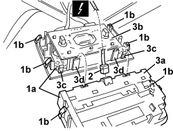

5580E50 ANTITHEFT DEVICE VOLUMETRIC SENSOR R R FOLLOWING ELECTRICAL CIRCUIT CHECK
- Path
- Procedures > 55 ELECTRICAL EQUIPMENT > 5580 SPECIAL ACCESSORIES > 5580E ANTI-THEFT DEVICE > 5580E50 ANTITHEFT DEVICE VOLUMETRIC SENSOR R R FOLLOWING ELECTRICAL CIRCUIT CHECK
- Kind
- repair procedure (removal / refitting; the operation number is the code)
- Applies to
- all engines; all production periods
- Interactive page
- https://sloeber94.github.io/elrnDB/alfa/159/en/#/939011105
Applies to: all engines; all production periods
 Removing
Removing
 Refitting
Refitting1. Move the front courtesy light assembly with volumetric sensor (1a), releasing the retainers (1b).
2. Disconnect the electrical connection.
Description | Component |
|---|---|
FRONT COURTESY LIGHT |
3. Disconnect the volumetric sensor casing (3a) from the front courtesy light (3b) releasing the retainers (3c) and the attachments (3d).

Applies to: all engines; all production periods
Refitting
Removing- Check that the volumetric sensor is not damaged.
- Connect the volumetric sensor casing to the front courtesy light, engaging the attachments and the retainers.
- Connect the electrical connection.
- Position the front courtesy light assembly and volumetric sensor and attach the retainers.
- Check that the dismantled parts are working properly.